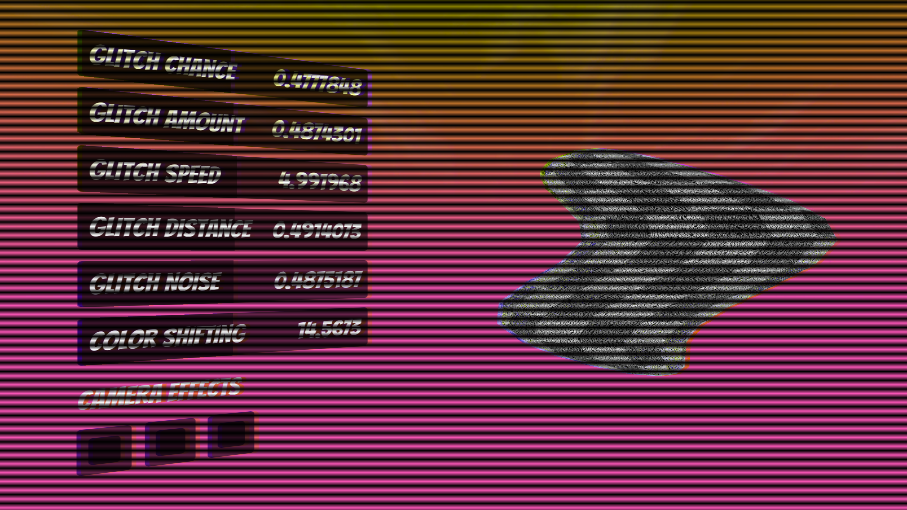

We made two kinds of glitch shaders: the unlit texture shader and the post effect image shader. We want to achieve three main effects with the unlit texture shader: vertex displacement, noise sampling, and color bleedings. We decided to implement this functionality through simulating a sinusoid function in vertex shader. In the vertex function, we move the X coordinate of the vertex by a sine function with respect to its Y coordinate and multiply it by the Distance and Amount parameter. As a result, we can create a glitchy displacement of the vertex. On top of that, we also want to be able to sample from a noisy texture to blur the image. In order to do this, we first sample from a black or white pixel from the noise texture based on the uv coordinates of the vertex. Next, we adjusted the original vertex uv coordinates based on the noisy pixel we previously sampled. Therefore, we could generate a noisy blur of the original texture. Finally, we also want our glitch shader to have the color bleeding effect. We divided a two part algorithm to accomplish this effect: color shifting and linear interpolation. By sampling from the vertically neighboring texture pixel, we could obtain the color information of nearby pixels. Then we mixed these colors to obtain a new color that reserved right information in the red channel, left information in the blue channel, and mixed information in the green channel. After we applied the noise effect, we did this step of mix color and linearly interpolated the original color and the mix color. After these three effects, we could get a nice glitch shader. Finally, we implement a controller to randomize when and how the glitch will happen through a C# script.
|  |
On top of that, we also made a camera effect shader that can function somehow like a camera filter. In total, we had three types of camera effects: CRT, color bleeding, and tint. To begin with, CRT is relatively intuitive, we made the whole screen vertically divided with the same amount of interval. In order to do this, we simply use a if statement to test if the Y coordinate can be divided by a certain amount of values. If not, we interpolate the blackness with the original color. Secondly, to finish color bleeding, we follow the exact method used in the previous unlit texture shader: color shifting and interpolation. Finally, we wanted to add a general tint effect to the camera as well. We follow the general approach as we did for color bleeding. We represented the information of lumen, hue, and saturation of the color through the RGB channel. Through multiplying these parameters by Value XYZ, we are able to achieve the desired effect. Next, we can transform this information back into the RGB color and return the color. Additionally, we also write corresponding C# controlling script to link our image effect shader to the camera.

|
As a result, we can apply glitch effects on any texture with various project parameters settings such as amplitude, length, and speed for the displacement. On top of that, we can have various color effects as well.
I had no previous experience about shaders before. Therefore, in the process of developing the glitch shader, it took me a really long time to learn about the Unity shader. I had a deeper understanding of how vertex and fragment shaders work in the rasterization pipeline. For the current implementation, we only have displacement based on the horizontal sine function. For the future improvement, there can be more displacement style implemented so that we can randomly generate glitch effects based on different displacement schemes. On top of that, we used C# script to control the shader’s randomness. We could improve the shader so that it relies on itself for the randomness.